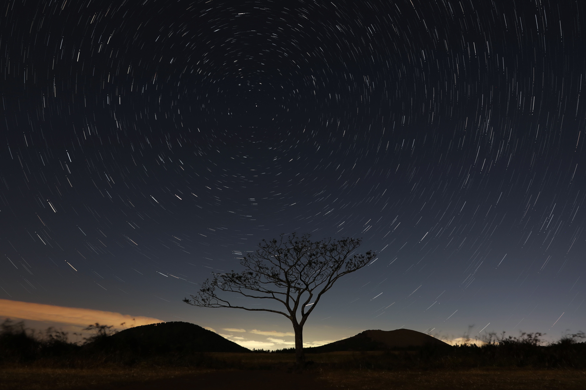
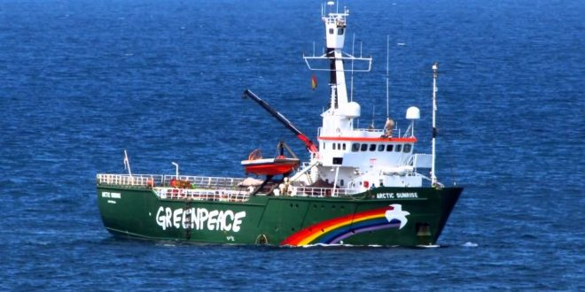

La naturaleza está a menudo escondida, a veces dominada, raramente extinguida.
Francis Bacon.

Datos curiosos |
|---|
|
Lloramos 61 litros de lágrimas en toda la larga vida.
#LaHuellaEcológica |
|
Cuando eramos bebes usábamos 3800 pañales y se degradan en 500 años.
#LaHuellaEcologica |
|
Para tener energía toda la vida necesitamos alrededor de 4273 barras de pan.
#LaHuellaEcologica |
|
Para toda nuestra vida 7.173 litros será todas las veces que nos bañemos, gastaremos 100.000 litros de agua
#LaHuellaEcologica |
|
En toda la vida leeremos 533 libros en toda la vida
#LaHuellaEcológica |
|
Conocerás y ser amigo de 1700 personas en toda tu vida.
#LaHuellaEcológica |
Ecologia 🌳 |
La ecología es una rama de la biología que estudia las relaciones entre los seres vivos, su ambiente, la distribución, la
abundancia, y cómo esas propiedades son afectadas por la interacción entre los organismos y el medio ambiente
en el que viven (hábitat), así como la influencia que cada uno de los seres vivos tiene sobre el medio ambiente.
La palabra Ökologie se deriva de la unión de las palabras griegas oikos, que significa casa, hogar, vivienda,
y logos, que significa estudio, tratado. Así, ecología significa el estudio del hogar. Esta palabra fue creada
por el científico alemán Ernst Haeckel en 1869 para designar la ciencia que estudia las relaciones entre
los seres vivos y el medio ambiente. Al principio era un término científico de uso restringido, y cayó en
el lenguaje común en la década de 1960, con los movimientos de carácter ambientalista.El concepto de ecología
humana se refiere al estudio científico de las relaciones entre los seres humanos y el medio ambiente, incluyendo
las condiciones naturales, las interacciones y los aspectos económicos, psicológicos, sociales y culturales.
La ecología es importante porque preserva y conserva el ambiente natural de las diferentes especies teniendo
en cuenta las relaciones entre el ser humano y la biosfera.En ecología, se estudian los procesos, la dinámica
y las interacciones entre todos los seres vivos de una población, de una comunidad, de un ecosistema o de
la biosfera. Las interacciones ecológicas se caracterizan por el beneficio de dos seres vivos (armónicas)
o por el perjuicio de uno de ellos (inarmónicas), y puede ocurrir entre seres de la misma especie (intraespecíficas)
o de diferentes especies (interespecíficas).
|
|---|
Que es Greenpeace?¿ |
Quienes somos?¿ |
|---|---|
|
Una de las principales organizaciones de la Ecologia, Biologia, Ciencias Naturales, esta organizacion se ocupa de cuidar al medio ambiente en su barco Esperanza lu logo es un ave con arcoiris.  |
Greenpeace es la organización ambientalista más reconocida, decidida y audaz en la defensa del medio ambiente en el mundo. Greenpeace se mantiene exclusivamente de donaciones de personas físicas que quieren un cambio para tener un planeta verde, pacífico y sin desigualdad. Es decir, Greenpeace no recibe dinero de gobiernos, empresas, iglesias ni partidos políticos. Gracias a este principio, nuestra organización es independiente en lo económico y lo político. La autosuficiencia económica permite a Greenpeace cuestionar, actuar, proponer y ponerle nombre y apellido a quienes destruyen el medio ambiente y a quienes pueden revertir esta situación. Para cuidar nuestro planeta realizamos acciones directas no violentas y de resistencia civil pacífica, con las cuales denunciamos los delitos ambientales y a quienes los cometen, generamos conciencia, informamos e inspiramos a la ciudadanía a participar en la búsqueda de soluciones. En pocas palabras, Greenpeace es una organización de la gente, que busca incidir en políticas públicas, involucrar e inspirar cambios y por la que constantemente transitan voluntarios, socios, activistas y ciberactivistas. En el mundo, Greenpeace tiene 43 oficinas. En 2008 abrió las más reciente en África. |
Misión 🐾 |
Visión 🦅 |
|---|---|
|
Propiciar un cambio en las políticas públicas y corporativas para una aplicación social y responsable de soluciones, inspirando y contribuyendo el fortalecimiento de un activo y plural movimiento ciudadano, en el marco de un nuevo modelo de consumo y producción hacia un mundo libre de amenazas al medio ambiente donde los efectos del cambio climático se vean reducidos y mitigados. |
Incrementar y consolidar nuestra presencia territorial a través del desarrollo de campañas que atiendan la dimensión global desde lo local, apoyados en un fuerte contingente de socios, voluntarios, ciberactivistas y grupos locales actuando en torno a las prioridades, acciones y propuestas que desean alcanzar en defensa del medio ambiente siendo así un factor clave en la lucha contra el cambio climático. |
Organizaciones ambientalistas |
Organizaciones en contra del ambiente |
|---|---|
|
|
|


Historia de la Ecologia |
Pieoneros |
|---|---|
|
La historia de la ecología es bastante reciente, no tiene ni siquiera 200 años de antigüedad. La historia de la ecología nos remonta al siglo XIX, y más específicamente al año 1869, año en el cual el alemán Ernst Haeckel introdujo el término Ökologie, el cual deriva del griego oikos (hogar, casa) y logos (estudio), entendiéndose por ecología el “estudio del hogar” y de un mejor modo para gestionarlo. Si vamos a una definición formación formal, la historia de la ecología nos dice que Haeckel entendía por ecología “una ciencia que estudia la relación de los seres vivos con el ambiente que los rodea”, aunque luego la definición fue ampliada por algo así como “el estudio de las características del medio”, dentro de lo cual se ocupaban importantes términos como materia, energía la biocenosis. Actualmente, el señor Haeckel es considerado el padre de la ecología y por supuesto el fundador del término, aunque la historia de la ecología se remota a la antigua grecia en realidad, veamos un breve resumen de como comenzó todo. Desde tiempos inmemoriales, el hombre siempre se ha visto interesado en conocer el medio que lo rodea, las extrañas y poderosas fuerzas de la naturaleza, los diferentes animales y especies de plantas que habitan junto a él. Los inicios de la ecología se crearon allí, con las primeras tribus del mundo, que dependían 100% de su entorno natural para lograr sobrevivir. Ellos cazaban, recolectaban frutos, pescaban, entre otras cosas. Y para hacer todo esto, necesitaban conocer los animales, plantas y el medio que los rodeaba. Más tarde también a medida que la raza humana avanzaba, desarrollaron la agricultura, así como la ganadería, tareas que llevaron a que el hombre tuviera que aprender cada vez más sobre los animales, plantas, el clima, entre muchas otras cosas. Sin embargo, esto no puede considerarse ecología, sino una mera necesidad de comprender y conocer el mundo que los rodeaba en la antiguedad. Los primeros estudios ecológicos surgieron sobre 325 a 285 A.C, cuando el filósofo Teofrastro comenzó a estudiar la forma en que diferentes organismos vivos interactuaban con sus medios. Más tarde, ya en la época de la Revolución Industrial de comienzos de 1800, Lamarck comenzó a hacer un claro relacionamiento entre los organismos y sus mecanismos de supervivencia de acuerdo a la adaptación que tenían en el ambiente cambiante donde vivían. St. George Jackson más tarde, sobre 1811 fue el primero en utilizar la palabra “Hexicologia“. La cual definía lo que hoy sería el estudio entre los organismos y su medio, teniendo en cuenta importantes factores como naturaleza del lugar donde viven, temperaturas promedio, iluminación del ambiente, así como la interacción que tenían con otros organismos del ambiente. Siguiendo con el estudio de los organismos, Mendel posteriormente observó que las características que eran heredadas no se mezclaban en los organismos, sino que permanecían totalmente distintas. Esta observación y descubrimiento dió pie a que luego se observara como algunos organismos lograban sobrevivir, adaptarse y resistir los cambios, mientras que otros no evolucionaban tanto, o perecían en el intento. Darwin, el famoso naturalista británico propuso más tarde su “selección natural“, según la cual ciertos organismos logran tener mejores habilidades (evolución) que otros para sobrevivir y reproducirse posteriormente. Isidoro Geoffrey más adelante fue el encargado de acuñar el término “Etologia”, definiendo así el estudio de las relaciones de cada organismo en la familia y la sociedad en que habitan. Fue un paso más para llegar a la moderna definición de ecología que conocemos hoy. Todavía no se sabe a ciencia cierta si fue Henry Walter Bates quien usó la palabra “Ecología”, o si fue Ernst Haeckal en 1870 quien comenzó a usar este término para referirse al estudio de los organismos y su medio ambiente. Lo que si sabemos, es que la historia y definición de la palabra ecología cambiaron muchísimo desde aquel entonces. Luego de comenzada la revolución industrial también se comenzó a notar como las industrias y la mano del hombre afectaban al medio ambiente de forma significativa, comenzaron las contaminaciones masivas en ríos, suelos y el aire. Más adelante se trasladó toda esta revolución a la industria automovilística, con la invención del coche moderno por Henry Ford, quien se propuso llevarlo en masa a cada lugar del mundo, cosa que logró. Con ello aumentó aún más la emisión de CO2, y la contaminación tal como la conocemos hoy en día. Desde la década de 1950 y 1960 recién se ha comenzado a considerar a la Ecología como una de las ciencias más fundamentales del mundo moderno, esto es debido a la masiva destrucción y daño que realiza el ser humano en su medio de vida. El incremento en la contaminación, la super población humana, y como esto afecta al planeta tierra han dado a la ecología moderna un gran protagonismo, algo que la hace presente en casi todos los lugares. Desde ese entonces, el reciclaje, así como el desarrollo sostenible y el favorecimiento del uso de energías renovables son cosas que se han vuelto cada vez más comunes en nuestras vidas. |


Corpyrigth © Derechos de autor MiKe and ZaiKo 2018